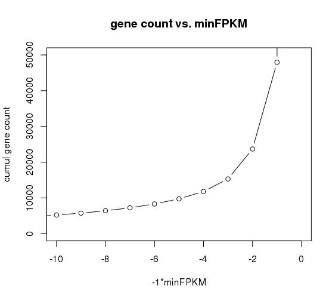

Table of Contents
Align Reads and Estimate Abundance
The Trinity toolkit comes with a script to faciliate this process:
$TRINITY_HOME/util/align_and_estimate_abundance.pl#########################################################################
#
# --transcripts <string> transcript fasta file
# --seqType <string> fq|fa
#
# If Paired-end:
#
# --left <string>
# --right <string>
#
# or Single-end:
#
# --single <string>
#
# --est_method <string> RSEM|eXpress abundance estimation method.
#
# --aln_method <string> bowtie|bowtie2|(path to bam file) alignment method. (note: RSEM requires bowtie)
# (if you already have a bam file, you can use it here instead of rerunning bowtie)
#
# Optional:
#
# --SS_lib_type <string> strand-specific library type: paired('RF' or 'FR'), single('F' or 'R').
#
# --thread_count number of threads to use (default = 4)
#
# --max_ins_size <int> maximum insert size (bowtie -X parameter, default: 800)
#
# --debug retain intermediate files
#
# --output_dir <string> write all files to output directory
#
#
# --gene_trans_map <string> file containing 'gene(tab)transcript' identifiers per line.
# or
# --trinity_mode Setting --trinity_mode will automatically generate the gene_trans_map and use it.
#
#
# --prep_reference prep reference set for eXpress (builds bowtie index, etc)
#
# --output_prefix <string> prefix for output files. Defaults to --est_method setting.
#
#
# --show_full_usage_info provide more detailed usage info for customizing the alignment or abundance estimation parameters.
#
#############################
# RSEM opts:
# --fragment_length <int> optionally specify fragment length (not seq length, but frag size ie. 300) for SE reads.
#
#########################################################################
#
# Example usage:
#
# ## Just prepare the reference for alignment and abundance estimation
#
# ./align_and_estimate_abundance.pl --transcripts Trinity.fasta --est_method RSEM --aln_method bowtie --trinity_mode --prep_reference
#
# ## Run the alignment and abundance estimation (assumes reference has already been prepped, errors-out if prepped reference not located.)
#
# ./align_and_estimate_abundance.pl --transcripts Trinity.fasta --seqType fq --left reads_1.fq --right reads_2.fq --est_method RSEM --aln_method bowtie --trinity_mode
#
## ## prep the reference and run the alignment/estimation
#
# ./align_and_estimate_abundance.pl --transcripts Trinity.fasta --seqType fq --left reads_1.fq --right reads_2.fq --est_method RSEM --aln_method bowtie --trinity_mode --prep_reference
#
#########################################################################If you have strand-specific data, be sure to include the --SS_lib_type parameter.
|
Note
|
It is useful to first run align_and_estimate_abundance.pl to only prep your reference database for alignment, using --prep_reference, and then subsequently running it on each of your sets of reads in parallel to obtain sample-specific abundance estimates. |
Alignment output (bam)
The alignment step generates the file bowtie.bam, which is then fed directly into either RSEM or eXpress. Note, the alignment step also generates a bowtie.csorted.bam file, which is a coordinate-sorted bam file that can be used for visualization using IGV (see below).
RSEM output
The RSEM computation generates two primary output files containing the abundance estimation information:
RSEM.isoforms.results : EM read counts per Trinity transcript
RSEM.genes.results : EM read counts on a per-Trinity-component (aka... gene) basis, 'gene' used loosely here.The output for the isoforms file looks like so:
| transcript_id | gene_id | length | effective_length | expected_count | TPM | FPKM | IsoPct |
|---|---|---|---|---|---|---|---|
c128_g0_i1 |
c128_g0 |
209 |
1.73 |
0.00 |
0.00 |
0.00 |
0.00 |
c13_g0_i1 |
c13_g0 |
235 |
7.16 |
1.00 |
12561.51 |
5282.75 |
100.00 |
c22_g0_i1 |
c22_g0 |
215 |
2.62 |
0.00 |
0.00 |
0.00 |
0.00 |
c28_g0_i1 |
c28_g0 |
329 |
54.60 |
4.00 |
6591.85 |
2772.21 |
100.00 |
c33_g0_i1 |
c33_g0 |
307 |
40.30 |
3.00 |
6697.56 |
2816.66 |
100.00 |
c35_g0_i1 |
c35_g0 |
219 |
3.33 |
0.00 |
0.00 |
0.00 |
0.00 |
c35_g1_i1 |
c35_g1 |
204 |
1.19 |
1.00 |
75295.99 |
31665.75 |
100.00 |
c39_g0_i1 |
c39_g0 |
348 |
68.20 |
1.00 |
1319.32 |
554.84 |
100.00 |
c39_g0_i2 |
c39_g0 |
255 |
13.97 |
0.00 |
0.00 |
0.00 |
0.00 |
c41_g0_i1 |
c41_g0 |
592 |
295.77 |
12.00 |
3650.37 |
1535.16 |
100.00 |
c44_g0_i1 |
c44_g0 |
361 |
78.10 |
1.00 |
1151.96 |
484.46 |
100.00 |
c44_g1_i1 |
c44_g1 |
280 |
25.22 |
1.00 |
3568.05 |
1500.54 |
100.00 |
and the genes file provides expression results on a per-Trinity component basis:
| gene_id | transcript_id(s) | length | effective_length | expected_count | TPM | FPKM |
|---|---|---|---|---|---|---|
c128_g0 |
c128_g0_i1 |
0.00 |
0.00 |
0.00 |
0.00 |
0.00 |
c13_g0 |
c13_g0_i1 |
235.00 |
7.16 |
1.00 |
12561.51 |
5282.75 |
c22_g0 |
c22_g0_i1 |
0.00 |
0.00 |
0.00 |
0.00 |
0.00 |
c28_g0 |
c28_g0_i1 |
329.00 |
54.60 |
4.00 |
6591.85 |
2772.21 |
c33_g0 |
c33_g0_i1 |
307.00 |
40.30 |
3.00 |
6697.56 |
2816.66 |
c35_g0 |
c35_g0_i1 |
0.00 |
0.00 |
0.00 |
0.00 |
0.00 |
c35_g1 |
c35_g1_i1 |
204.00 |
1.19 |
1.00 |
75295.99 |
31665.75 |
c39_g0 |
c39_g0_i1,c39_g0_i2 |
348.00 |
68.20 |
1.00 |
1319.32 |
554.84 |
c41_g0 |
c41_g0_i1 |
592.00 |
295.77 |
12.00 |
3650.37 |
1535.16 |
c44_g0 |
c44_g0_i1 |
361.00 |
78.10 |
1.00 |
1151.96 |
484.46 |
c44_g1 |
c44_g1_i1 |
280.00 |
25.22 |
1.00 |
3568.05 |
1500.54 |
How many expressed genes or transcripts do I have?
Presumably, a transcript is expressed if it has been assembled from RNA-Seq data, but as we know, transcription can be quite pervasive, and many transcripts, particularly the very lowly expressed ones, have questionable biological significance. Note that some transcripts may have artificially low (or zero) expression values simply because they are incompletely assembled and do not recruit both pairs of PE reads in order to be properly accounted for during abundance estimation. If we assume that most biologically relevant transcripts are reasonably well assembled and well quantified by the abundance estimation method used, we might infer the approximate number of expressed genes or transcripts as the number that are expressed above some minimum expression threshold.
Given an RSEM output file, you can plot the number of genes (or transcripts) that are expressed above a minimum FPKM expression threshold like so.
Generate a data file containing the minimum fpkm threshold and count of features (genes or transcripts) by running the following on your gene or transcript RSEM output file:
$TRINITY_HOME/util/misc/count_features_given_MIN_FPKM_threshold.pl RSEM.genes.results > cumul_counts.txtwhich will generate output like so:
| neg_min_fpkm | num_features |
|---|---|
-15510 |
1 |
-15260 |
2 |
-11615 |
3 |
-11459 |
4 |
… skipping many lines |
… |
-5 |
9730 |
-4 |
11806 |
-3 |
15310 |
-2 |
23685 |
-1 |
47930 |
0 |
1388798 |
The above table indicates that we have at least 23,685 genes expressed by at least 2 FPKM (after first rounding FPKM values).
The data can be plotted using your favorite utility. If you choose to use R, you might do it like so:
R
>data = read.table("cumul_counts.txt", header=T)
>plot(data, xlim=c(-10,0), ylim=c(0,50000), xlab='-1*minFPKM', ylab='cumul gene count', type='b', main='gene count vs. minFPKM')which would generate the following plot:

You can see that, in my current sample, we have over 1.3 million genes, but only a fraction of them (47,930) are expressed at least by 1 FPKM (after rounding the FPKM values).
If we want higher precision in the number of genes expressed between 0 and 1 FPKM, we can count them by running a filter on the RSEM output file like so:
cat RSEM.genes.results | sed '1,1d' | awk '$7 >= 0.1' |wc -l84097To reproduce one of the numbers in the above table, it would look like so:
cat RSEM.genes.results | sed '1,1d' | awk 'int($7 + 0.5) >= 2' |wc -l23685Ultimately, the most biologically relevant transcription is this particular case is probably ~30k genes, but of course, this is highly subjective, as is the definition of a gene itself and what many would consider to be biologically relevant. Simpler operational definitions can suffice here as part of generating bulk statistics.
Filtering lowly supported transcripts (using RSEM output files)
If you want to filter out the likely transcript artifacts and lowly expressed transcripts, you might consider retaining only those that represent at least 1% of the per-component (IsoPct) expression level. Because Trinity transcripts are not currently scaffolded across sequencing gaps, there will be cases where smaller transcript fragments may lack enough properly-paired read support to show up as expressed, but are still otherwise supported by the read data. Therefore, filter cautiously and we don’t recommend discarding such lowly expressed (or seemingly unexpressed) transcripts, but rather putting them aside for further study.
The utility script TRINITY_RNASEQ_ROOT/util/filter_fasta_by_rsem_values.pl can be used to filter your FASTA file of assembled transcripts using the RSEM values within the RSEM.isoforms.results file, according to min IsoPct, min FPKM, and min TPM. Note, you can provide a list of RSEM output files, one for each sample, and filter out those transcripts that do not meet the specified requirements in any of the samples given.
Running eXpress
If parameter setting --est_method eXpress is used, eXpress will be run, and files generated will include:
results.xprs : the primary eXpress output file, containing expression values for transcripts.
results.xprs.genes : a 'genes' expression output file, generated by the Trinity toolkit, based on the eXpress transcript results.Note, the results.xprs.genes file content is formatted identically to the results.xprs file, but limited in data content to the length, counts, and FPKM expression values. The remainder of the fields are set to NA.
Sample Data
Under TRINITY_RNASEQ_ROOT/sample_data/test_Trinity_Assembly, execute
% runMe.sh 1to first build Trinity transcript assemblies using the sample data, and then run through the downstream alignment and abundance estimation steps.
Visualization of Aligned Reads Using IGV
The Trinity Transcripts and read alignments can be visualized using the Integrated Genomics Viewer.
Just import the Trinity.fasta file as a genome, and load up the coordinate-sorted bam file containing the aligned reads (bowtie.csorted.bam). A screenshot below shows how the data are displayed:

Detailed Assessment of Read Content of the Assembly
The above methods for quantitation rely on sets of properly paired reads. However, it is sometimes the case that certain (usually small) reconstructed transcript fragments can capture alignments to individual reads but not to both paired reads of RNA-Seq fragments. By running the process below, both the single-end and propery paired reads can be captured, counted, and visualized:
$TRINITY_HOME/util/bowtie_PE_separate_then_join.pl --seqType fq --left left.fq --right right.fq \
--target Trinity.fasta --aligner bowtie -- -p 4 --all --best --strata -m 300As usual, if you have strand-specific RNA-Seq data, indicate this with the --SS_lib_type parameter.
An output directory bowtie_out is created and should include the files:
bowtie_out.nameSorted.bam : alignments sorted by read name
bowtie_out.coordSorted.bam : alignments sorted by coordinate.To get alignment statistics, run the following on the name-sorted bam file:
$TRINITY_HOME/util/SAM_nameSorted_to_uniq_count_stats.pl bowtie_out/bowtie_out.nameSorted.bam#read_type count pct
proper_pairs 47042 83.59 (left and right reads align to the same transcript)
improper_pairs 6824 12.13 (left and right reads align, but to different transcripts)
left_only 1300 2.31
right_only 1110 1.97Total aligned reads: 56276 (counting individual reads of pairs, each read counts only once).You can load up the bowtie_out.coordSorted.bam file into IGV for visualization.